秋日限定遛娃指南｜来西山捡秋、做蝴蝶生态标本
秋日限定遛娃指南
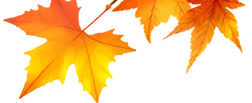
北京的秋，
藏在西山层林渐染的树叶里，
藏在林间微凉的风里，
也藏在蝴蝶振翅掠过的光影里。
趁着秋意正浓，
别再只带娃爬山看红叶啦
—— 来北京西山国家森林公园拾光营地，
走近「森林皇后」绿带翠凤蝶、
会 “变色” 的大紫蛱蝶的斑斓世界，
亲手把蝴蝶展翅的瞬间永久封存，
做成带着山林气息的专属自然藏品，
定格一整个秋天的浪漫。
在秋雨的催促下
西山的层林就浸上了暖黄与深红。
但多数人匆匆爬山，
错过了脚下铺了满地的秋日宝藏 ——
圆滚滚顶着小帽子的橡子、
层层叠叠的松果、
长着小翅膀的枫种、
藏在落叶里的 “假板栗”……
这个秋天，
别再只是 “看秋”，
跟着我们来西山「捡秋」。
识秋果、辨树木、捡素材，
亲手做一盒格子自然标本，
把整座山林的秋意，封进方寸之间。
这个秋天，
我们准备了两场不同主题的自然限定活动，
一场定格蝶翼的斑斓光影，
一场捡拾大地的秋意馈赠。
不用再纠结怎么选，
不管是爱蝴蝶的灵动，
还是爱果实的质朴，
都能亲手把西山的秋天，
做成专属的自然藏品带回家。
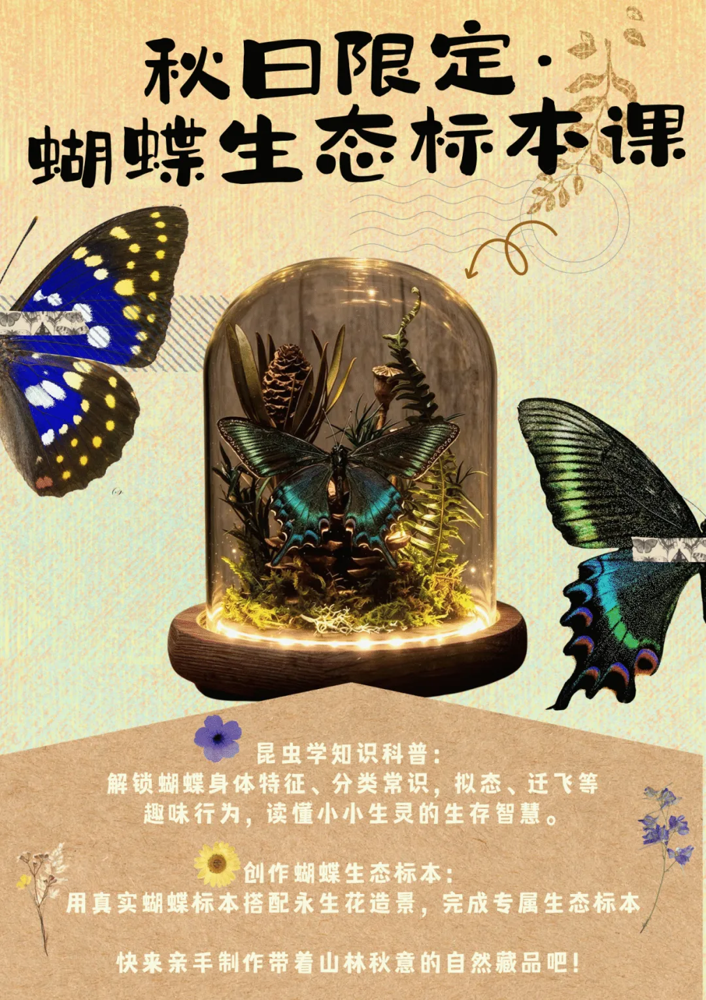
活动一：蝴蝶科普
生态标本课


解锁蝴蝶的生存智慧
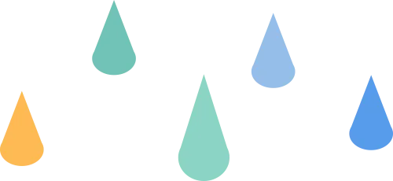
这不是一堂枯燥的知识灌输，而是打开微观自然世界的趣味大门。专业博物讲师从孩子的好奇心出发，用生动的故事和实拍素材，拆解蝴蝶的奇妙生存密码，更能近距离认识两位蝴蝶明星：
✅ 翅膀上的光学魔法：蝴蝶的身体密码认识蝴蝶的身体结构，揭开翅膀上 “彩色粉末” 的真面目 —— 那是无数排列整齐的鳞片，更是蝴蝶自带的 “光学魔法棒”。本次活动的两位主角，完美诠释了大自然的光影魔术：
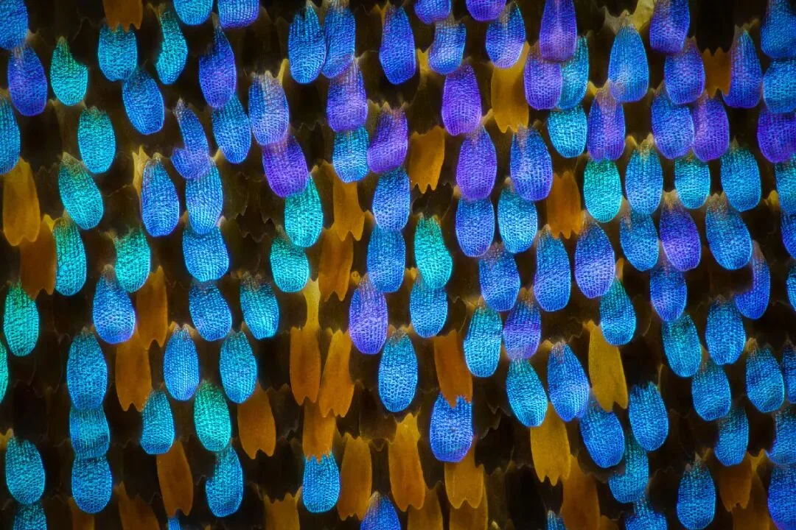
（绿带翠凤蝶翅膀的显微照片）
🔹 绿带翠凤蝶：林间漫步的「森林皇后」它是北京本土蝴蝶中的颜值天花板，有着 “森林皇后” 的美称。翅膀上流动的蓝绿色金属光泽，并不是普通的色素染色，而是鳞片的特殊微结构折射阳光形成的结构色。在西山的林间，它总爱停在树梢高处，平时很难近距离看清纹路。这一次，孩子可以捧着标本细细观察，看阳光在翅膀上流转出祖母绿般的光泽。
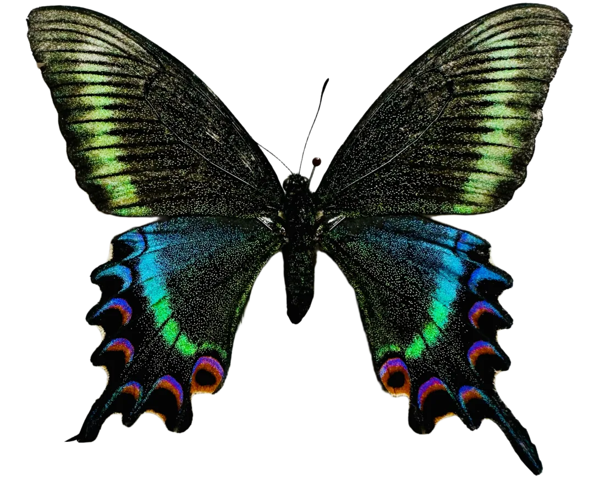
🔹 大紫蛱蝶：会 “变色” 的蝴蝶精灵它是蝴蝶界的 “变色龙”，翅膀正面的浓紫色泽会随观察角度变幻：正对光线时是华贵的深紫罗兰色，侧过角度又会变成墨绿、棕褐，像把整片彩虹藏进了翅膀里。和多数爱吸花蜜的蝴蝶不同，它偏爱发酵的树汁，是个口味独特的 “林间美食家”。
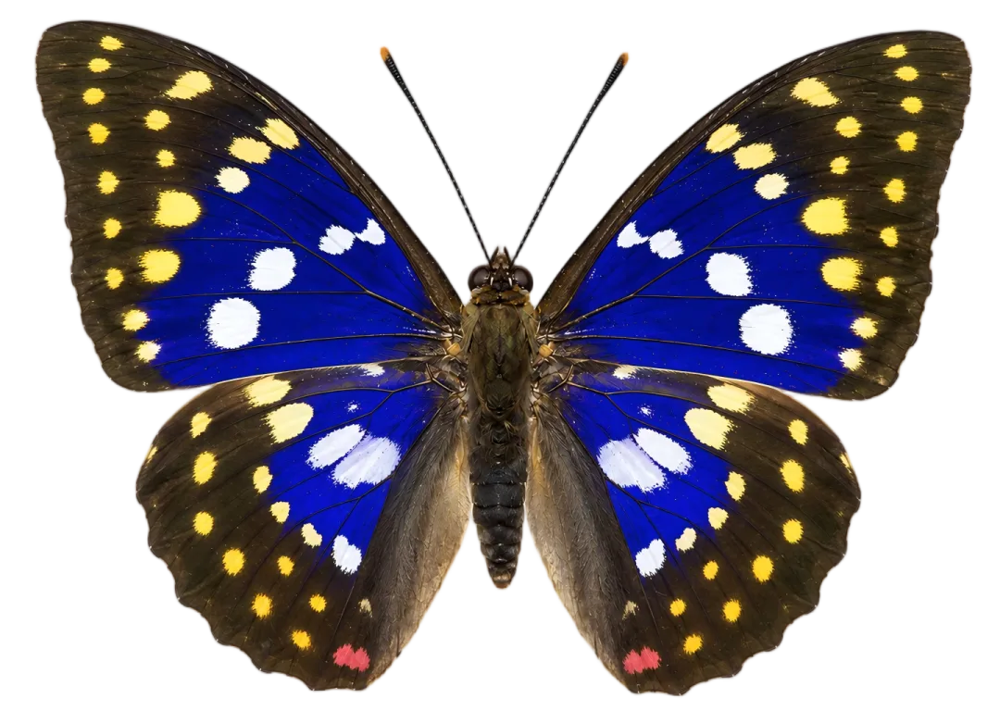
✅ 昆虫界的生存大智慧拟态到底有多神奇？枯叶蝶如何把自己 “伪装” 成一片枯叶骗过天敌？凤蝶翅膀上的 “大眼睛” 又是怎么吓退鸟类的？还有跨越数千公里的蝴蝶迁飞奇迹，读懂小小生灵背后的生存智慧。
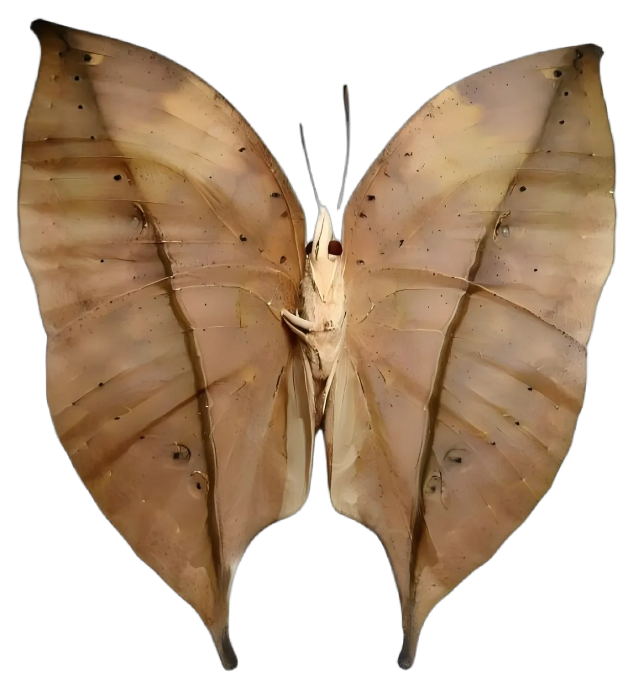

（枯叶蛱蝶与猫头鹰环蝶的拟态）
✅ 西山的林间都生活着哪些本土蝴蝶？它们偏爱哪种花蜜？幼虫又以什么植物为食？带你认识家门口的自然邻居，逛公园再也不是 “走马观花”。

手作时光：亲手打造秋日生态标本

听完干货，
就到了孩子们最期待的动手环节！
我们提供全套专业材料，
无需自备任何工具，
就能做出一款精致的生态蝴蝶标本，
成品直接带走。
真实优质蝴蝶标本：选用完整美观的真实蝴蝶标本，纹路清晰、色彩饱满，绿带翠凤蝶、大紫蛱蝶等人工养殖的蝴蝶标本等你来创作。
秋日山林生态造景：搭配永生花、苔藓、松果等充满秋意的自然素材，孩子可以自由发挥想象力，设计专属的微型山林场景，每一份都是独一份的自然礼物。
带灯玻璃罩质感成品：原木底座搭配暖光小灯，盖上高透防尘玻璃罩，既能长久保存标本，摆在书桌、玄关、客厅都是超有质感的自然摆件。
市面上同款精致生态标本动辄一两百元，这一次，孩子不仅能全程动手参与、学到硬核博物知识，成品还能直接带回家，把西山的秋日永远留在身边。
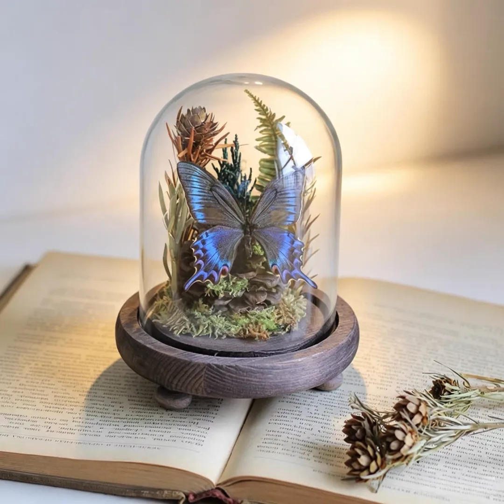
活动二：西山捡秋・
自然标本课
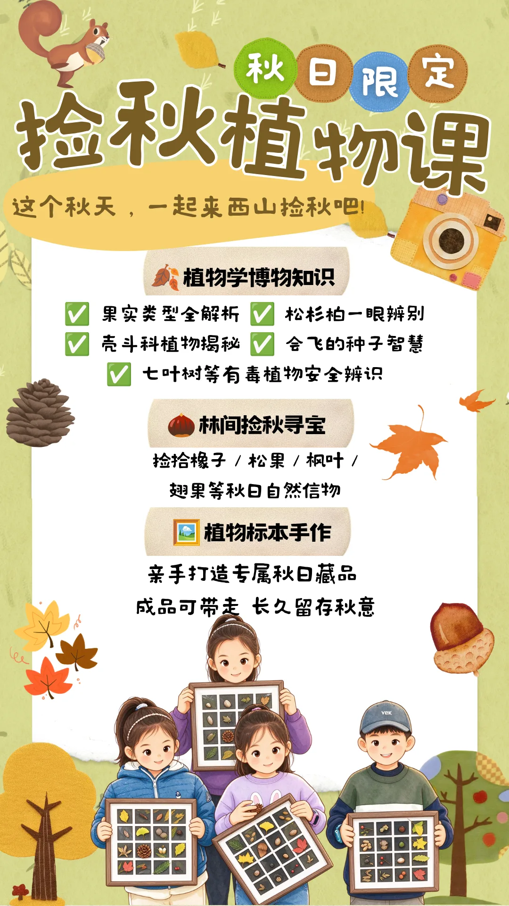

博物课堂：解锁秋日植物的植物学知识
这不是枯燥的课本知识，
是走在路上就能用的植物辨识指南。
资深博物讲师把秋日林间
最常见的知识点拆成好懂又有趣的小故事，
孩子听完就能当 “小小植物学家”。

① 秋天的果实盲盒：
原来它们不是同一种 “果子”
我们捡的松果、橡子、枫叶果，
居然不全是 “果实”？
课堂上会给孩子讲清植物果实的核心分类：
被子植物的坚果、翅果、蒴果
各有什么特点，
为什么松果属于裸子植物的 “球果”
而不是真正的果实。
从果皮的软硬到种子的排列，
每一种掉落物，
都是植物繁衍的智慧结晶。
捡秋的时候，
孩子可以对着实物一一对应，
把知识从课堂搬到大自然里。

（生活中常见的果实类型）

② 松杉柏 “三兄弟”：一眼辨别的实用技巧
松树、杉树、柏树长得像总认错？
三个超简单的分辨方法，
孩子看一眼就能记住：
现场搭配三种植物的枝叶、
果实实物对比，
摸一摸、看一看，
下次逛公园再也不会叫混。
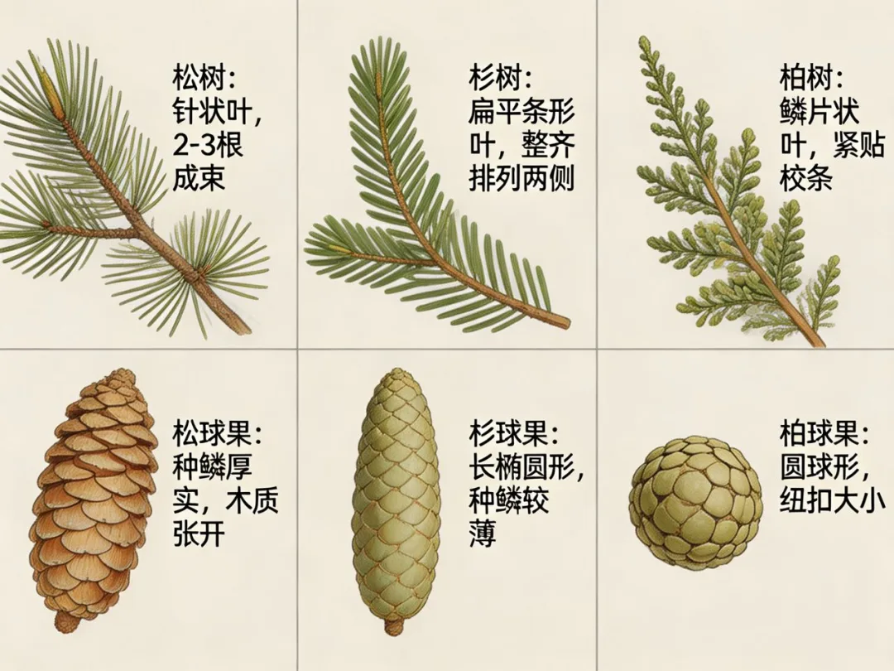
（松杉柏的辨识技巧）

③ 带 “小帽子” 的壳斗科：
林间的 “过冬粮仓”
西山秋日掉落最多的野果，
当属壳斗科的橡子。
它们最标志性的特征，
就是种子基部套着一个杯状的 “小帽子”
—— 壳斗，
这也是壳斗科名字的由来。
栓皮栎、槲栎、槲树……
西山的壳斗科家族成员众多，
它们的橡子是松鼠、花鼠等小动物
最爱的越冬主食。
不同种类的橡子，
帽子的形状、
鳞片的纹路、
果实的大小都不一样。
捡秋的时候，
孩子可以挨个对照辨认，
收集不同款式的 “橡子小帽子”。

（不同种类的壳斗科植物的果实）

④ 会 “飞” 的种子：植物的乘风旅行家
为什么元宝枫的种子能飘出很远？
因为它长着一对薄如蝉翼的 “翅膀”，
是典型的翅果。
因为形状酷似古代的金元宝，
它也得名 “元宝枫”。
秋风掠过树梢，
翅果就像迷你直升机一样旋转着降落，
借着风力飞到远离母树的地方生根发芽。
这是植物演化出的种子传播智慧，
也是秋天林间独有的浪漫。
除了元宝枫，
西山还有哪些自带 “飞行器” 的种子？
课堂上一一揭晓，
捡完还能来一场趣味 “种子飞行大赛”。

（不同类型的翅果）
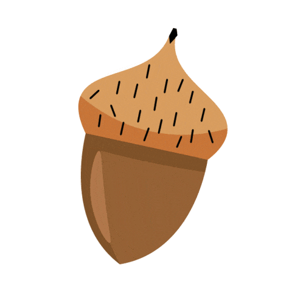
⑤ 学习有毒的植物的辨识
捡秋时最重要的安全知识点，
一定要记牢！
林间有一种圆滚滚、
棕褐色的果子，
外形酷似板栗，常被人误认成野板栗 ——
这是七叶树的种子（俗称马栗），
含有大量人体无法降解的皂角苷，
误食会引发呕吐、眩晕，严重时可危及生命，
绝对不能食用。
捡秋不随意采食，安全永远是第一位。
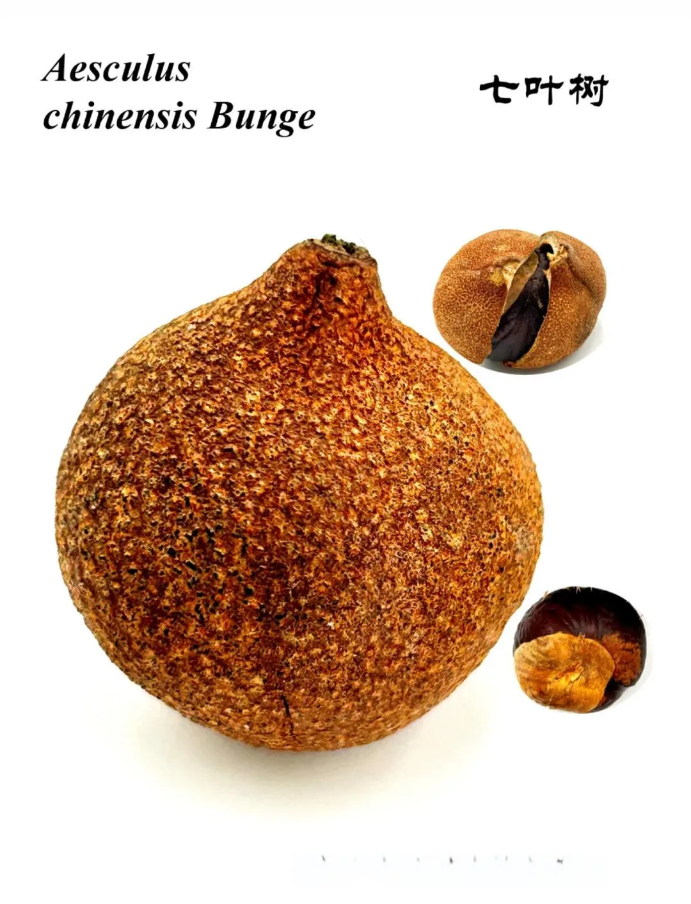
（七叶树的果实）
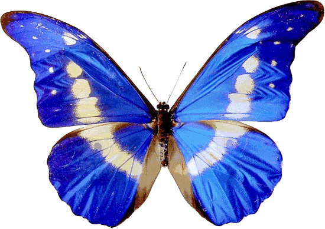
专业导师带队，干货好玩两不误


活动详情

活动时间
2026年10月24日（周六）
蝴蝶科普与生态标本课
▫️13:30 - 14:30
西山捡秋・自然标本课
▫️ 15:00 - 16:00
活动地点
北京西山国家森林公园・拾光营地
活动价格
168 元 / 组
（建议 1 大 1 小共同参与，成品标本可带走）
适合人群
5 岁及以上儿童，热爱自然、
喜欢手工的亲子家庭
活动流程
蝴蝶科普与生态标本课
🔹 博物小课堂：蝴蝶的特征，与蛾子的区别，蝴蝶的一生，迁徙与拟态等超级有趣的知识
🔹 手作时光：生态标本手作创作
🔹作品展示 & 合影留念，成品可带走
西山捡秋・自然标本课
🔹博物小课堂：果实类型辨识、松杉柏区分、壳斗科科普、会飞的种子、七叶树等有毒植物植物学知识科普
🔹林间捡秋：营地周边步道捡拾自然掉落物
🔹手作时光：组装、布置专属格子秋日标本
🔹作品展示 & 合影留念，成品可带走
北京的秋天总是走得很快，
不如趁这个秋天，
带孩子走进西山的林间，
学知识、做手工、
收藏一整个秋天的浪漫。
扫码即可咨询报名，
名额有限，先到先得👇

供稿:拾光营地
编辑:付旭阳
校对:余 甜
审核:赵东波、蔡凤仙